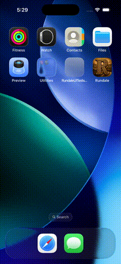

Test-only change (issue 2314). Simulator run (iPhone 17 Pro, not a physical iPhone, fixture
restoration-long-history, not live gameplay) of
RundaleUITests/testReadingAnchorRestoresTheVisibleHistoricalRow after the fix: the test swipes
the transcript, waits for the visible historical rows to stop moving, records one row and its viewport offset,
relaunches, and checks the same row is restored at the same offset. The test passed.
